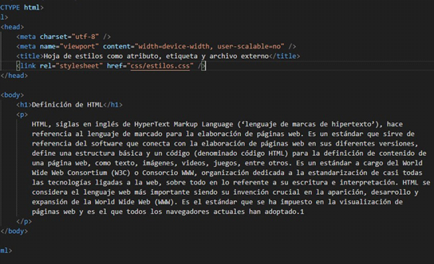

Hojas de estilos como atributo, etiqueta y archivo externo
En CSS tenemos varias maneras de modificar un archivo de HTML. Cuando nos referimos a las maneras,
se hace referencia desde donde vamos a usar CSS. Esto se puede logar desde una página externa
, desde una etiqueta en el propio HTML o como un atributo de la etiqueta en HTML.
A continuación, vamos a ver las características de cada una, su jerarquía y su utilización.
Atributo Style
El primer atributo que vamos a ver su funcionamiento es "STYLE". Empezaremos aplicando CSS a nivel
del elemento HTML. Es decir, dentro de la apertura de la etiqueta.
Para conceptuar la descripción anterior, cambiaremos el color del texto que se encuentra como
contenido en la etiqueta “p”, lo que tendremos que hacer es lo siguiente:
A la etiqueta de apertura “p” le debemos agregar el atributo “style” con una propiedad
llamada “color” y el valor “red”. Guardamos los cambios para ver el resultado en el
navegador.
Si deseamos o nuestro sitio debe tener otro tipo de letra, podemos usar la propiedad “Font-family”
y como valor el nombre de la tipografía que estemos necesitando. Esto puede colocarse dentro de la misma
etiqueta y seguido en la propiedad de "style”. Tengamos en cuenta, que si, agregamos más de una
propiedad estas deben estar separadas por punto y coma (;).
Este tipo de estilos son llamados estilos en línea (in line), porque estamos agregando los contenidos
dentro de la misma etiqueta.
Etiqueta Style
El siguiente método que existe para trabajar con los estilos CSS es a través de la etiqueta "style"
la cual debe estar ubicada dentro de la etiqueta "head" y luego de la etiqueta "title".
Para este nuevo ejemplo, agregaremos dentro de la estructura creada anteriormente, un título de nivel H1
que podrá decir: “Definición de HTML”. A continuación, crearemos la etiqueta "style"
con su respectivo cierre, porque, contendrá elementos dentro de su estructura.
Para agregar estilos a la etiqueta "h1" debemos hacer referencia a ella, es decir, debemos “seleccionarla”:
Dentro de las etiquetas de “style” colocaremos “h1” y luego seguido, crearemos una llave con su respectivo
cierre “{}”. Dentro de ellas, colocaremos las propiedades que serán aplicadas al elemento con sus
respectivos valores (como lo hacíamos en el ejemplo anterior en una misma linea). Para el ejemplo,
cambiaremos el color de la etiqueta a “blue” y también, cambiamos el formato de la letra a “helvética”.
Guardamos los cambios para visualizar el resultado en el navegador.
Ahora, cambiaremos el tamaño del párrafo a un valor de 5px, para ello debemos realizar la identificación
de "p" como hicimos con "h1". "P" llevará la propiedad: “Font-size” que es la
propiedad para cambiar el tamaño de las letras y el valor de: “15px”. Guardamos los cambios para ver
el resultado en el navegador.
Diferencia entre style como atributo y style como etiqueta
Con el atributo style dentro de la etiqueta solo afectamos a una etiqueta puntual. Si tenemos varios
párrafos, sólo se modificará la etiqueta con el atributo.
Usando este método, si queremos que todos los párrafos de un documento tengan las mismas características
deberemos agregar a cada uno el atributo style lo cual hace el procedimiento largo y poco eficiente.
En caso de la etiqueta style las reglas que se escriban en su interior afectarán a todos los
elementos seleccionados del archivo HTML.
Archivo externo de tipo CSS
Nos queda saber el último paso de como conectar los estilos de CSS a nuestro documento de HTML.
Debemos saber, que este proceso es el más recomendado ya que nos genera una estructura de trabajo mucho
más ordenada.
De esta forma, sirve para vincular un archivo externo de tipo CSS en el cual estarán escritas las
reglas necesarias para mejorar el aspecto de nuestro sitio Web. Para hacerlo, debemos realizar varias
actividades iniciales.
Primero agregaremos a nuestro directorio de archivos en el que estamos trabajando una carpeta llamada CSS,
que será el lugar donde guardaremos las hojas de estilo. Luego en nuestro editor en la carpeta nueva
creada anteriormente, crearemos un archivo con nombre “estilo.css” y lo guardaremos.
Primero, agregaremos a nuestro directorio de archivos en el que estamos trabajando una carpeta llamada “CSS”,
que será el lugar donde guardaremos las hojas de estilo. Luego, en nuestro editor en la carpeta nueva creada
anteriormente crearemos un archivo con nombre “estilo.css” y lo guardaremos.
Para poder conectar ambos archivos y ver los cambios que vamos realizando en el navegador, debemos hacer
mención del archivo .css desde el código HTML, a través, de la etiqueta "link" que debe estar ubicado
dentro de la etiqueta "head" luego de la etiqueta "title".
La etiqueta "link" debe tener un atributo llamado “rel” con el valor “stylesheet" y otro atributo llamado
“href” con el valor de la ruta relativa de nuestro directorio de trabajo, en donde se encuentra el
archivo que vamos a conectar. El atributo “rel” especifica el tipo de código que se encontrará en el
archivo externo. Para nuestro caso las reglas CSS, y el atributo href se refiere a la ruta donde se
encuentra dicho archivo que, en este caso, es una hoja de estilos que se nombra “estilos.css” y se
encuentra guardada en la carpeta css dentro de la carpeta principal del proyecto que estamos trabajando.
Tip:
Esta declaración se puede hacer de forma automática en VS code simplemente escribiendo en limpio “link” lo que nos retorna una vez que apretamos “enter” la estructura de esta etiqueta.
Debemos saber también que esta etiqueta no tiene una etiqueta de cierre, porque, al estar en la etiqueta
head estamos referenciando que es solo una etiqueta de información. Además, es una etiqueta que no tiene
contenido que se muestre en el viewport del navegador (ej: texto).
Un archivo de HTML puede tener varias etiquetas “link” con diferentes enlaces de archivos de tipo “.css”.
Esto puede ocurrir ya que tal vez cada uno de ellos nos proporcionarán diferentes estilos y funcionalidades
de estilos para nuestra web. Estos links nuevos que podemos conectar externos pueden ser por ejemplo una
fuente de “Google fonts”, una página de íconos, etc..

Diferencia entre la etiqueta style y un archivo externo
Mientras que con la etiqueta "style" debemos escribir los estilos para cada archivo HTML que tengamos,
con una hoja de estilos externa solo debemos hacer la codificación una vez y cada cambio afectará a
todos los archivos HTML con los que esté vinculada.
Cabe mencionar también que es de buena práctica y recomendable que en el caso de tener un proyecto de
trabajo con muchos estilos CSS se haga en un archivo externo ya que esto permite un código limpio.